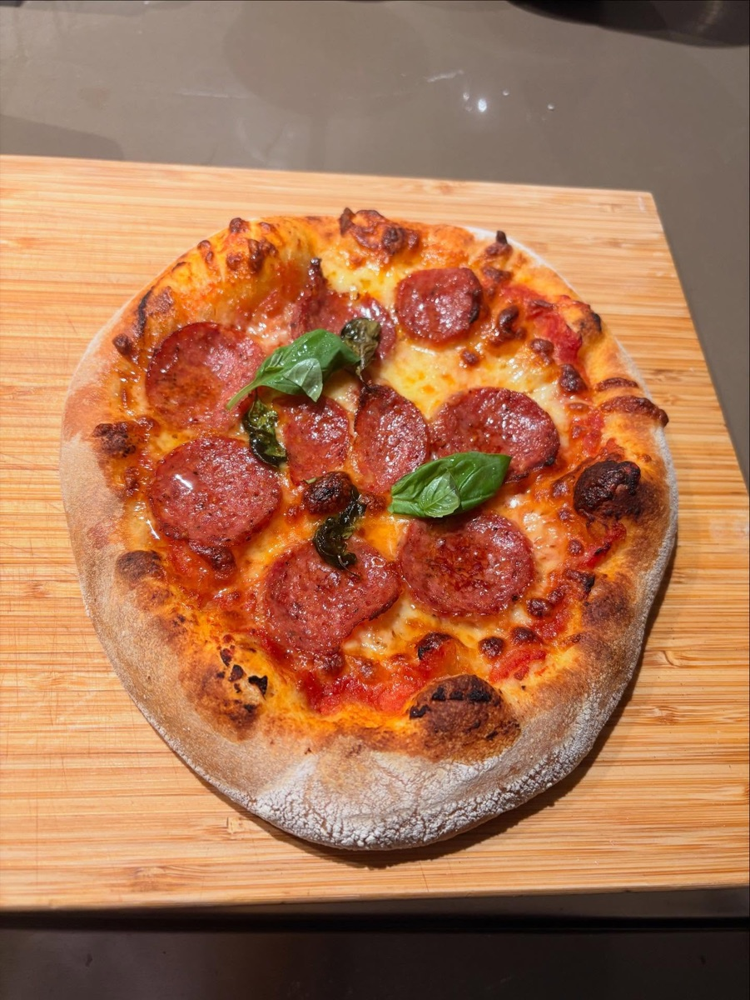
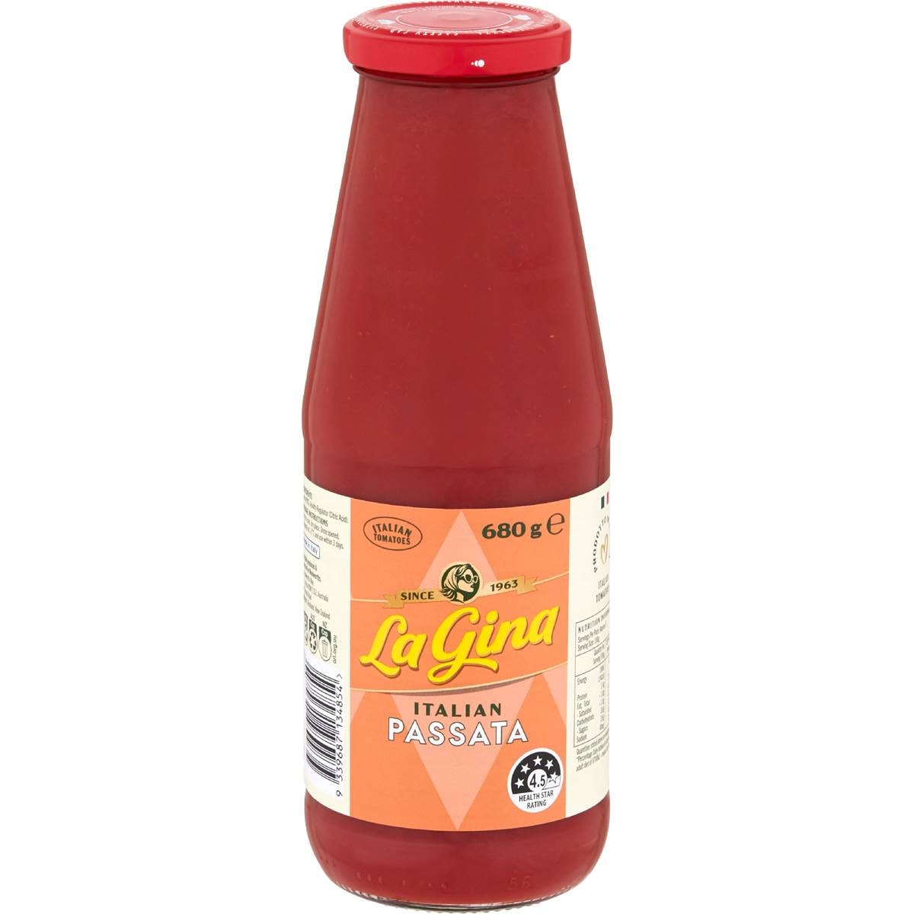
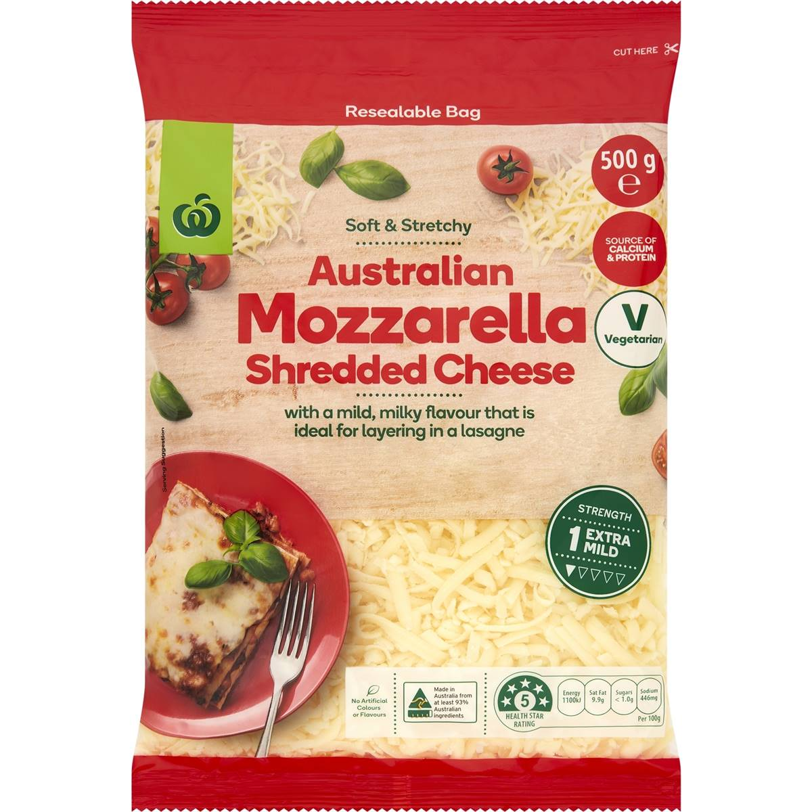
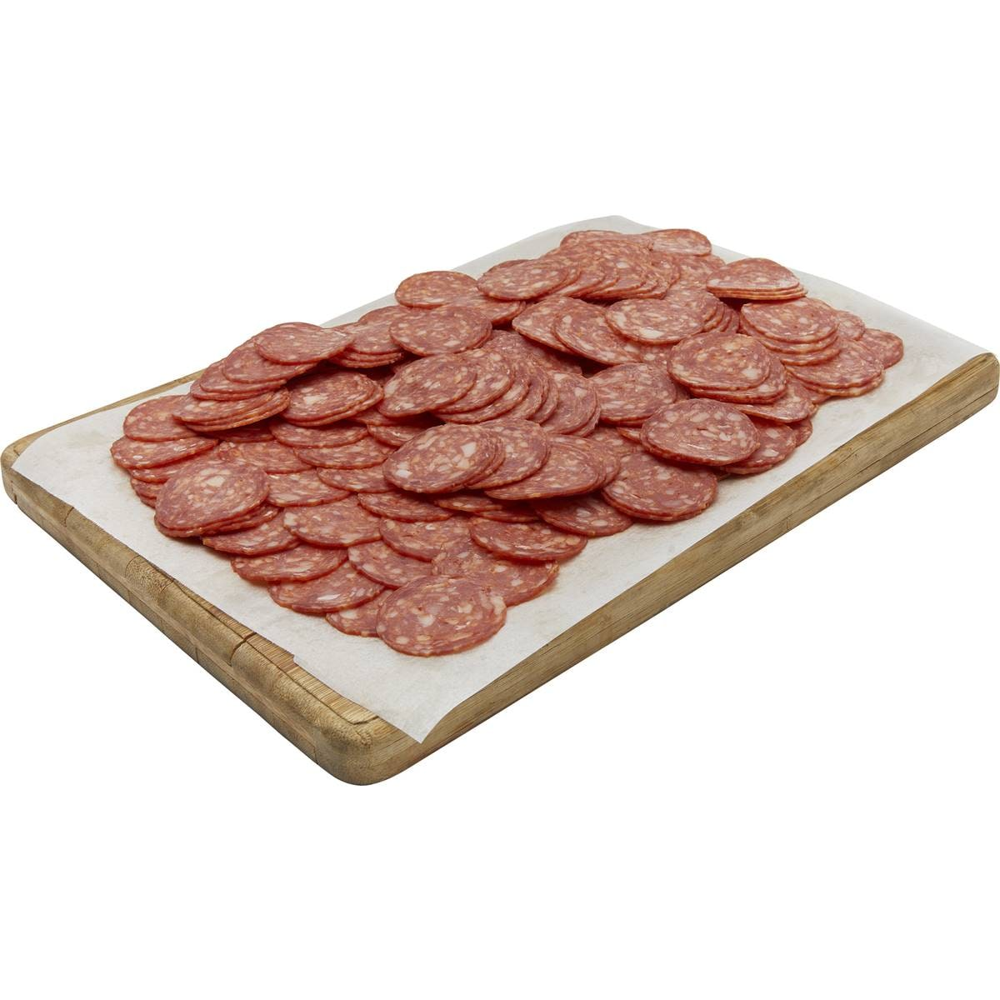
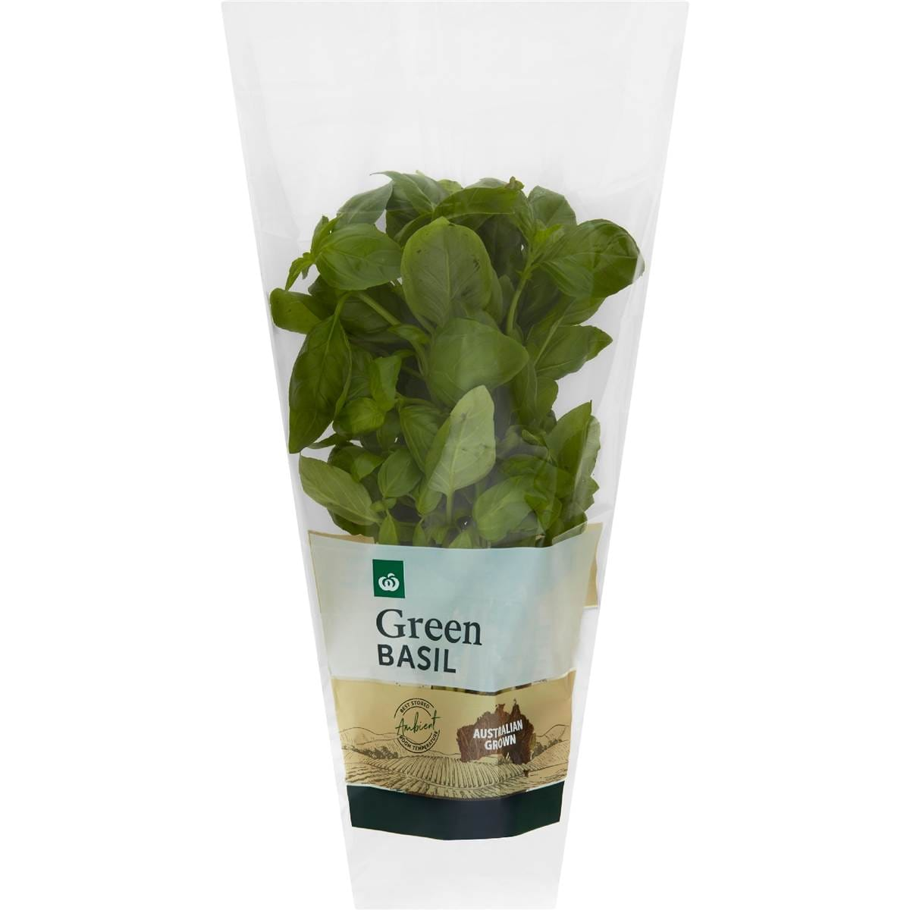

Pepperoni Pizza
An overnight dough baked as hot as the oven goes, topped with passata, mozzarella, pepperoni and basil.

An overnight dough baked as hot as the oven goes, topped with passata, mozzarella, pepperoni and basil.
 300g bread flour
300g bread flour 200ml water
200ml water 3g instant yeast
3g instant yeast 8g salt
8g salt 1 tbsp olive oil
1 tbsp olive oil
150ml passata
200g mozzarella
80g sliced pepperoni
A few basil leavesGo easy on the sauce and cheese; too much and the middle stays soggy before the crust is done.